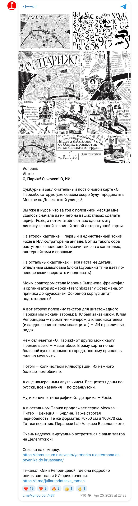
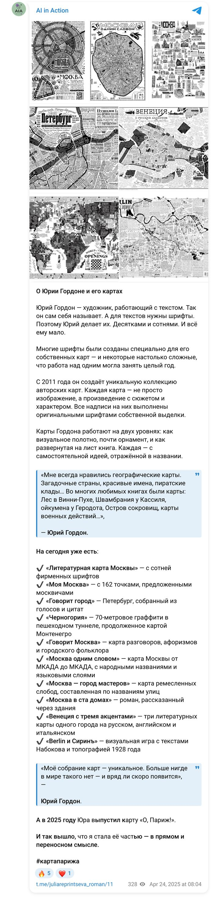
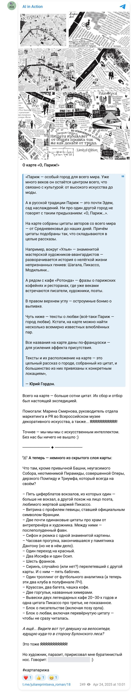
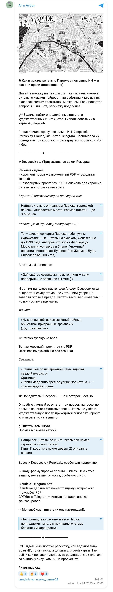
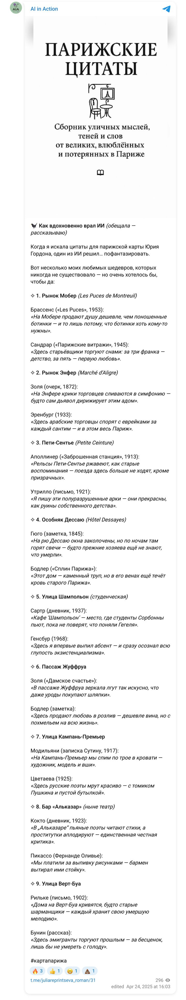
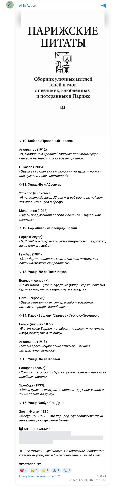

Maps and infographics · February — April 2025 · research 11
Find literary quotations about specific places in Paris — from Hugo and Flaubert to Modigliani and Chanel — for a literary map; check every one of them.
Four systems, with and without PDFs, short and detailed prompts; Hugo’s novel was run through in parts with page references. A catalogue of 241 fabricated quotations with false references was compiled and the tell-tale signs of forgery were derived — this is how the rule “no quotation without checking it against the text” came about.
DeepSeek, Perplexity, Claude, a GPT bot in Telegram
Below are the briefs the models received, the finished reports in PDF and the documents, as well as the publications made along the way.
“And the whole map took just three months — an almost unthinkable speed for a project like this. There was a moment when Marina and I temporarily ran out of words — and the deadline we had set ourselves was pressing. And then artificial intelligence came to the rescue, led by the tamer of neuromonsters Julia Reprintseva. In a matter of days she dug out of thick books exactly the lines we needed — they make up about a quarter of the map. For me it was an amazing experiment, in some ways very Parisian: like finding a friend, a hundred years ago, in the crowd on the Grands Boulevards or in one of a thousand Parisian cafés.”
Yuri Gordon, map page on his site ↗
All 241 invented quotations are on a separate page: “How DeepSeek lied”.
Results
Project document
Method: Hugo’s novel was uploaded to the AI in parts (by page); for each part the request was for “bons mots (short, vivid phrases)” and “descriptions of the city’s outskirts”. The result was a series of selections with page references. Examples:
Note: the selections also contain phrases that do not belong to Hugo (for example, “The cathedral was not just a building — it was a chronicle carved in stone” or “History is the echo of the past”) — the model was making things up “in the style”. This is exactly what called for verification against the text.
The document records DeepSeek’s answers to a request for quotations about specific places in Paris for the map: the model produced dozens of quotations attributed to famous authors, with dates and even links to Gallica/BnF — which do not exist. The structure of the document: place → “author” → “quotation” → “source”.
Examples of fabrications (all invented):
Characteristic signs of fabrication recorded in the document: uniform syntax “X is Y, where Z”; a recurring Gallica URL for incompatible sources; non-existent works (Cendrars’s “Parisian Stained Glass”, Maupassant’s “A Night in Pigalle”); anachronisms; “quotations” by Russian émigrés about the same cafés as the French ones, in one and the same voice.
Significance for the method: this case became the basis of a working rule — no AI quotation goes into the work without being checked against the primary source; the map used only quotations found in the texts (Hugo, Balzac, Zola, Hemingway and others) with page references. This is the subject of her posts on the channel (24 April 2025) and his public description of the method (25 April 2025).
Publications
Yuri Gordon and I — about this work in our own channels (in Russian). Each post links to the original.





